01
Central controller
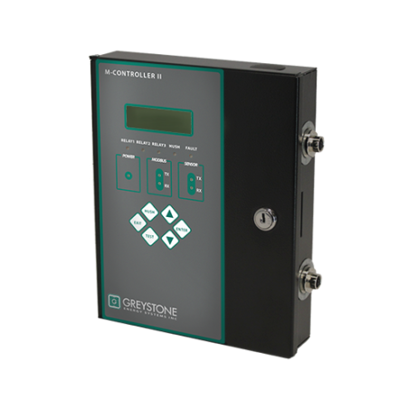
M-Controller
Programmable multi-channel gas detection controller with distributed sensing, alarm processing, relay control, communications, configuration, and system integration.
View project →Gas Detection Product Engineer · Since 1995 · HW · FW · SW · Mechanical · QA
Since 1995 I have worked in the gas-detection industry, developing product after product as a solo designer across hardware, firmware, software, mechanical design, and QA test. I take each device from first concept to production — and connect them into complete, networked detection systems built on modern IoT concepts.
About
I have spent my career — since 1995 — in the gas-detection industry, continuously developing new products. As a solo designer, my work spans every engineering discipline: for the products shown here I personally completed the electrical architecture, analog and digital circuitry, PCB design, embedded firmware, PC and Android software, enclosure and mechanical design, verification strategy, QA and production test procedures, and end-user documentation.
Beyond individual devices, I built the system-level network that ties sensors, transmitters, controllers, and BACnet gateways together into a complete detection system — and extended the platform with modern IoT concepts for networked monitoring, remote configuration, and data connectivity.
I also led the complete rebranding of these gas-detection products from QEL to Greystone, including product appearance, labels, 3D SolidWorks renderings, marketing images, manuals, software branding, and release documentation. The product images shown here are public Greystone product images created from my original product photography or SolidWorks work. Product names, trademarks, certification marks, and commercial materials remain the property of their respective owners.
Designed end-to-end
Gas detection · Controllers · BACnet gateways
Central controller

Programmable multi-channel gas detection controller with distributed sensing, alarm processing, relay control, communications, configuration, and system integration.
View project →Central controller
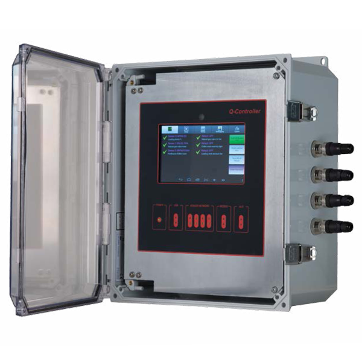
Universal 256-sensor gas detection controller and alarm unit, interfacing with up to 128 remote digital transmitters and 128 analog inputs while driving 128 relay and 128 analog outputs. Touchscreen HMI with Modbus communications — the large-capacity member of the controller platform (the M-Controller covers up to 40 sensors).
Four-channel controller
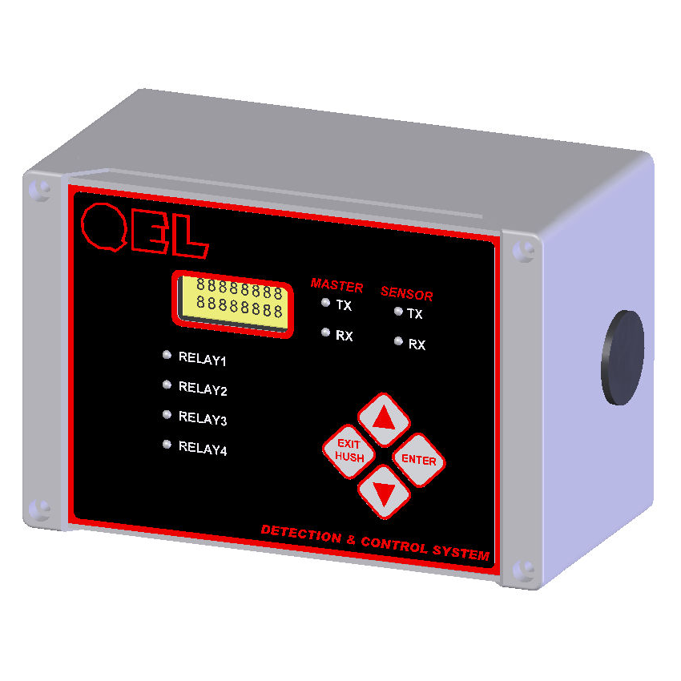
Four-channel gas monitoring and control system — a microprocessor-based, field-programmable controller that manages up to four QEL digital sensor/transmitters over an RS-485 smart-sensor port. Pluggable power and option boards add 10 A SPDT relays, isolated 4-20 mA outputs, an isolated RS-485 uplink, and buzzer, strobe, and horn outputs, in an IP66 / NEMA 4X enclosure.
BACnet/IP converter
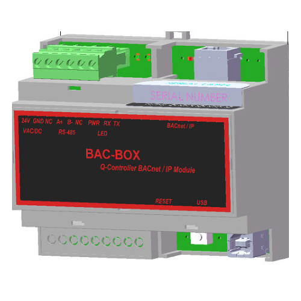
BACnet Application Specific Controller (B-ASC) that puts a QEL controller gas-detection system — Q-Controller, M-Controller, or Q4 Controller — onto a BACnet/IP network, bridging the controller's RS-485 field bus to Ethernet. Gas concentrations, switch status, and relay status are exposed as individual BACnet objects — up to 192 AI, 32 AO, 16 BI, and 64 BO.
Gas transmitter family
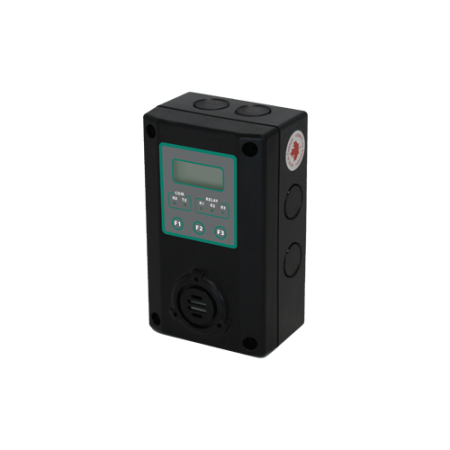
Fixed gas detection transmitter platform developed as a complete sensing product, including electronics, enclosure, firmware, an embedded BACnet MS/TP communication stack on the B5 variant, calibration workflow, production testing, and technical documentation.
Gas transmitter family
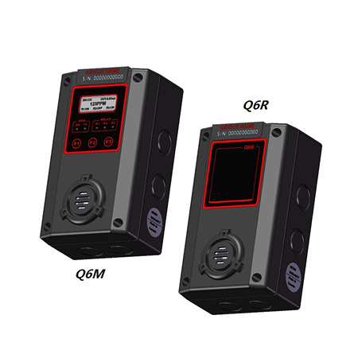
Networked gas transmitter platform integrating sensor interfaces, local display and controls, alarm functions, field communications, configuration tools, and manufacturing support.
Advanced transmitter
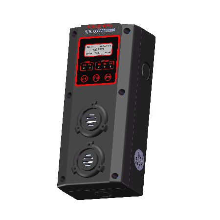
Industrial gas detection transmitter designed across hardware, firmware, sensing, mechanics, user interface, diagnostics, test procedures, and field-service documentation.
Explosion-proof transmitter
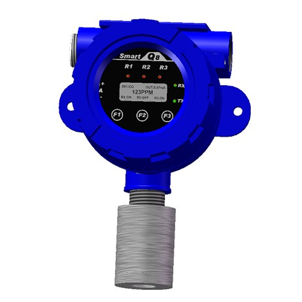
Explosion-proof toxic and combustible gas transmitter for hazardous, Class I Division 2 areas, built around a rugged enclosure. Digital concentration display with STEL, TWA, and peak readings, a three-colour alarm backlight, and non-intrusive calibration. Supports electrochemical, catalytic-bead, PID, and infrared sensors — Q8 with 4-20 mA and RS-485 Modbus, B8 with RS-485 BACnet MS/TP.
Infrared refrigerant detector
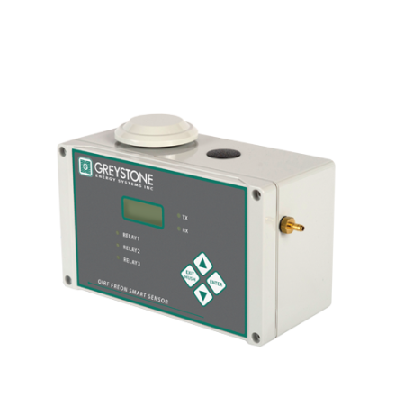
Infrared refrigerant detection platform combining optical and electronic design, embedded signal processing, an integrated BACnet MS/TP communication stack, calibration methods, fault diagnostics, mechanical packaging, and factory test procedures.
Remote display
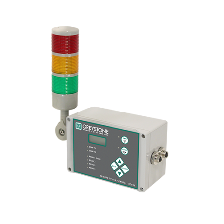
Remote display and annunciation platform for distributed gas detection systems, including communications, interface electronics, embedded firmware, enclosure design, and installation documentation.
Refrigerant safety platform
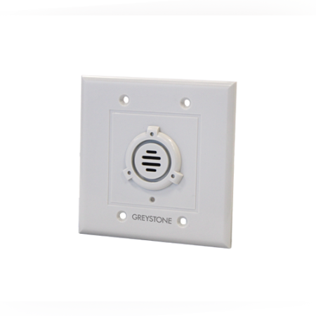
Modern refrigerant detection platform with embedded control, a BACnet protocol stack ported from the open-source BACnet Stack project (BTL Listed at Protocol Revision 26), fieldbus communications, NFC commissioning, configurable manufacturing data, diagnostics, and Android-based configuration and firmware download.
Sample-draw system
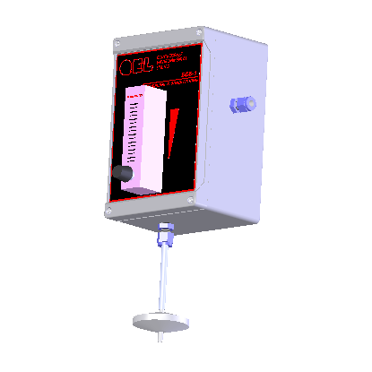
One-channel sampling and conditioning system that draws air from a remote area or confined space for analysis. A motorised pump with clogging and water detection, a precision flow meter with direct-reading scale, and a replaceable in-line disk filter, all housed in a NEMA 4X enclosure for continuous operation in harsh environments.
BACnet protocol engineering
I ported and integrated the BACnet communication stack — based on the open-source BACnet Stack project — on the B5, QIRF-II, and QVRF transmitters, covering the MS/TP data link, object model, standard services, alarming, and device configuration. The QVRF implementation was independently verified and achieved BTL Listing at BACnet Protocol Revision 26 (PR26). The same protocol work also drives the BAC-Box, a BACnet Application Specific Controller that presents a QEL controller gas-detection system (Q-Controller, M-Controller, or Q4 Controller) as individual BACnet objects on a BACnet/IP network.
* Certification scope depends on the specific product model, sensor, revision, and listing. Selected products achieved UL 2075 certification, while many products were evaluated or listed to UL 61010 requirements. BTL Listing applies to the specific QVRF product and revision submitted to the BACnet Testing Laboratories. Certification marks should only be shown with the exact approved model and listing information.
System network
Relays · I/O · Annunciators · Switches
The controllers anchor a larger detection network. I designed the surrounding modules that expand I/O, drive remote relays and annunciators, and distribute switching and display across a site.
Remote relay module — up to 11 modules give a maximum of 99 relays.
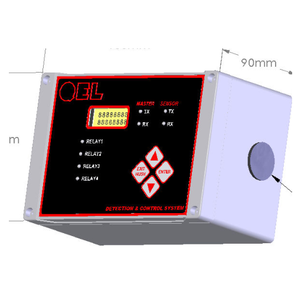
Remote display with on-board relays.
LED annunciator panel.
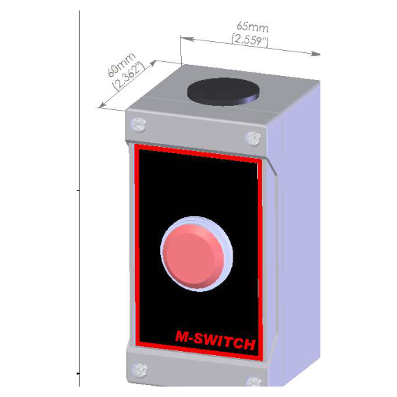
Remote switch that commands the M-Controller or Q4 Controller to activate relays.
8-channel analog input module (up to 16).
8-channel analog output module (up to 16).
4-channel relay input module (up to 31).
4-channel relay output module (up to 31).
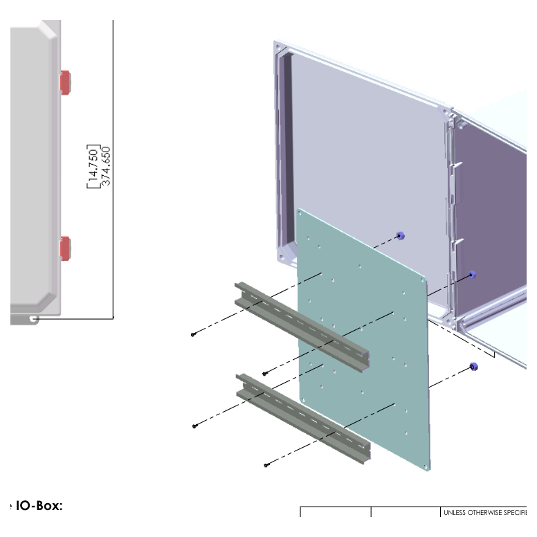
DIN-rail mounting box for expansion modules.
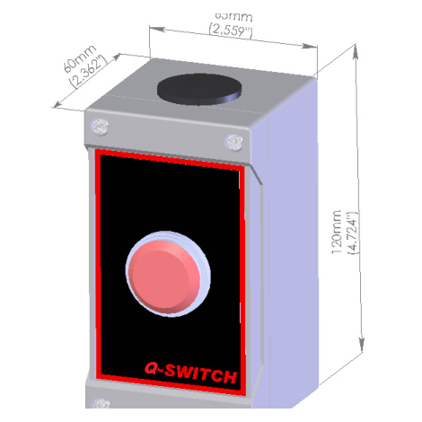
Remote switch for the Q-Controller.
QEL → Greystone
Engineering continuity · New visual identity
Following QEL's integration into Greystone Energy Systems, I rebranded the complete gas-detection portfolio while preserving the underlying product architecture and certification-controlled design.
My engineering ownership
Product requirements, architecture, sensor interfaces, analog front ends, power supplies, communications, protection, diagnostics, and safety functions.
Schematic capture, component selection, PCB layout direction, prototypes, bring-up, design correction, EMC improvement, and production release.
Real-time control, calibration, signal processing, alarms, relays, diagnostics, Modbus, BACnet, NFC, bootloading, and field-update strategy.
Enclosure concepts, mounting, sensor chambers, optical and airflow considerations, cable access, assembly details, labels, and production drawings.
Design verification, environmental and functional testing, failure analysis, certification support, UL 2075, UL 61010, and manufacturing qualification.
QA test procedures, calibration procedures, manufacturing tools, troubleshooting instructions, installation manuals, operation manuals, and release control.
Software ecosystem
Windows / PC
PC-based applications for device setup, network configuration, calibration, diagnostics, commissioning, data management, and production support.
Android / NFC
An Android NFC application for fast commissioning and service of QVRF devices, including configuration, cloning, calibration, diagnostics, and firmware download.
Contact
Open to engineering leadership, product development, and consulting opportunities. Let's talk.
xyzheng69@hotmail.com